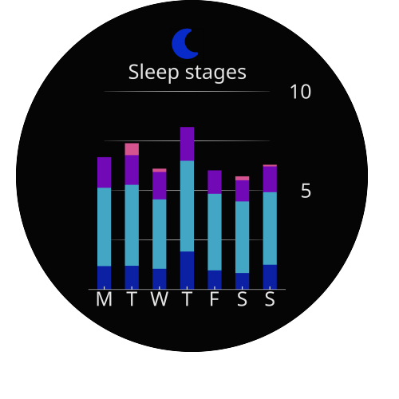
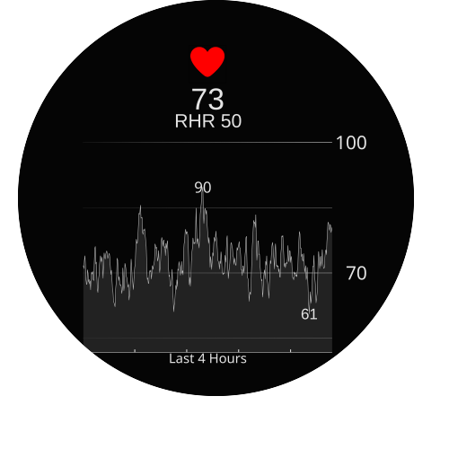

Show the code
library(dplyr)
library(tidyr)
library(ggplot2)
library(ggforce)
library(ggtext)
library(showtext)
library(fontawesome)
library(magick)I recently got my first garmin watch and I’m fascinated by the dataviz aspect of it. If you haven’t heard about it, Garmin is a brand of sports watches that allows you to track a bunch of stuff during activities and daily life like heart rate, stress, sleep etc. That means they need to display a lot of information in a very small space. They need to be very intuitive and easy to understand. Designing clear, intuitive visualizations within a circular space that has 40mm diameter isn’t trivial. It’s a constraint I’d never seriously considered before. And naturally, that made me want to recreate some of those charts in R.
Will I use them for anything practical? No. Is it fun? Absolutely.
And I find recreating other data visualizations to be a great way to learn new techniques and improve my skills. Especially ones that were created in a different technology. I only have the end point and I need to figure out how to do it in R. That means my thinking is not naturally constrained by what is intuitive in R/ggplot world. Here are a few pictures of the Garmin charts I decided to rebuild (These recreations are purely a technical exercise, I’m not attempting to replicate or reuse Garmin’s design system beyond this exploration.):
sleep
heart rate

stress

training readiness

There are a few characteristics that feel distinctive in Garmin’s visual style:
Vivid, high-contrast colors on a dark background
Gradients and transparency to create depth
Strong visual emphasis on key metrics
All of those help to remove things that could distract users from the key elements. It’s actually quite natural if you design charts that are supposed to be displayed on a 40mm screen that users will just glance at while walking/running. You can’t get into any detailed stroytelling here!
In order to recreate the garmin data viz we’ll need a few sets of package. Firstly, of course some data wrangling and basic {ggplot2}. We’ll need {ggforce} to better work with gradients and transparency in the plots. We’ll also need some packages to deal with texts: {showtext} for basic fonts, {fontawesome} and {ggtext} to work with icons inside ggplot. Finally we’ll need {magick} to crop the plots to circular shape and {ggimage} to place the gradient background in the training readiness plot.
library(dplyr)
library(tidyr)
library(ggplot2)
library(ggforce)
library(ggtext)
library(showtext)
library(fontawesome)
library(magick)To recreate the plots, we’ll first need some data.
The heart rate and stress visualizations show continuous changes over time at a fairly granular level. For those, I’ll simulate time series data using a simple ARIMA process. The exact values aren’t important, what matters is generating realistic-looking variation.
The sleep plot aggregates metrics at daily intervals, while the training readiness visualization represents a single score at a given moment. For these, simple categorical or summarized data structures are sufficient.
Since the focus of this post is on visual construction rather than modeling, simulated data works perfectly well here.
set.seed(2137)
hr_raw <- arima.sim(n = 480, list(ar = c(0.95), ma = c(0.3)), sd = 2)
hr <- 70 + hr_raw
hr_data <- data.frame(time = 1:480,
hr = hr)
sleep_data <- data.frame(
day = c(seq.Date(from = as.Date("2026-02-02"), length.out = 7, by = "day")),
awake = c(0, 36, 10, 0, 0, 12, 5),
light = c(237, 245, 210, 275, 232, 217, 220),
deep = c(71, 72, 63, 115, 58, 50, 75),
REM = c(93, 90, 83, 102, 71, 64, 78)
)
stress <- arima.sim(n = 68, list(ar = c(.9), ma = c(.9, .6, 12)), sd = .55, mean = .3)
stress_data <- data.frame(time = 1:68,
stress = stress)
stress_data <- stress_data |>
mutate(level = case_when(
stress <= 30 ~ "low",
stress <= 50 ~ "med",
stress <= 75 ~ "high",
stress > 75 ~ "very high"
))
training_data <- data.frame(
status = c("not ready", "no", "ok", "ready", "prime"),
level = c(0.25, 0.25, 0.25, 0.22, 0.03)
)We’ll start by defining a shared theme that will be used across all plots.
As discussed earlier, Garmin’s visual style relies on a dark background with high-contrast, oversized typography. To approximate that look, we’ll create a custom ggplot2 theme with muted gray text on a near-black background.
For typography, we’ll use Noto Sans as the base font and incorporate icons from Font Awesome. We can get Noto Sans from google but Font Awesome needs to be downloaded from their website as an .otf file. We’ll use this theme in every plot and only tweak some additional elements if necessary.
font <- "Noto Sans"
font_add_google(font)
font_add('fa-solid', './Font Awesome 7 Free-Solid-900.otf')
# my guess is we need to adjust both the size of the original p
showtext_auto()
theme_garmin <- function() {
theme_minimal() +
theme(plot.background = element_rect(fill = "#050505"),
panel.grid.minor = element_blank(),
panel.grid.major = element_blank(),
axis.text = element_text(color = "white", size = 15),
text = element_text(color = "grey90", family = font))
}Before generating the individual visualizations, we need a way to crop each plot into a circular shape.
The approach is straightforward:
Save the plot to a temporary file with additional padding.
Draw a circular mask over the image.
Crop the image to that mask.
The helper function has several parameters: the width and height image to crop, the scale (size of the final image), and the position and radius of the circular mask. These controls are necessary because not all plots behave the same way — the training readiness visualization, in particular, requires slightly different scaling.
Finding the right parameter values took a few iterations. Once calibrated, however, the function makes circular cropping consistent and reproducible across plots.
One parameter is especially important: the size argument inside circle_position. This determines the final visible diameter of the plot, and keeping it constant ensures visual consistency across all visualizations.
crop_to_circle <- function(original_plot, width, scale, height, border, circle_position) {
temp_file <- tempfile(fileext = ".png")
ggsave(temp_file, original_plot, width = width, height = height, bg = "black")
img <- image_read(temp_file) |>
image_scale(paste0(scale, "x", scale)) |>
image_background("none") |>
image_border("none", paste0(border, "x", border)) |>
image_trim()
# Create circular mask
mask <- image_draw(image_blank(scale, scale))
symbols(circle_position["left"], circle_position["top"], circles = circle_position["size"], bg = 'black', inches = FALSE, add = TRUE)
dev.off()
img_circle <- image_composite(img, mask, operator = "DstIn")
return(img_circle)
}We can see how this works on a simple example. Here’s an uncropped plot:
example_df <- data.frame(x = sample(letters, 5),
y = c(1, 2, 3, 4, 5))
example_plot <- example_df |>
ggplot(aes(x = x, y = y, fill = y)) +
geom_col() +
annotate(geom = "text", x = median(example_df$x), y = 6, label = "Some text", size = 50, color = "white") +
scale_x_discrete(expand = c(0,0)) +
scale_y_continuous(expand = c(0,0)) +
coord_cartesian(ylim = c(0, 8)) +
labs(x = NULL, y = NULL) +
theme_garmin() +
theme(legend.position = "none",
plot.margin = margin(t = 50,200,200,200))
example_plot
And here’s a cropped one:
cropped_example_plot <- crop_to_circle(example_plot, 15,15, border = 10, scale = 500, c("left" = 240, "top" = 250, "size" = 220))
cropped_example_plot
One thing that required a lot of tweaking from me with that approach was setting the right margins in the plots before cropping. Essentially we need to add enough space around the plot so that the cropped plot doesn’t cut off any of the elements. This was especially tricky with the training readiness plot as it looked different from other plots.
Let’s start with the sleep stages visualization. It consists of three main components:
Grid lines that fade toward the edges (with some lines more prominent than others)
A header containing text and an icon
Bars representing sleep stages across the week
Most of the other plots have a similar structure (except the training readiness which has a gauge) so once we get the general patter it will be easier to make the other plots.
We’ll start with the gradient grid lines. {ggplot2} does not support gradient strokes for panel grid lines out of the box, so we need to draw them manually.
This is where {ggforce} becomes particularly useful. Its geom_link2() allows us to vary aesthetics — including alpha — along the length of a line. By mapping transparency across the x-direction, we can create the fading effect that mimics Garmin’s design. it’s been the best function for me to work with gradients and lines in {ggplot}.
We can also do some basic wrangling here (pivoting to long format and making phase variable a factor) and define some basic properties of the plot like the formatting of x and y scale and the limits on y axis.
grid_line <- data.frame(
x = c(min(sleep_data$day), median(sleep_data$day), max(sleep_data$day)),
y = rep(c(10, 5), each = 3),
alpha_val = rep(c(0.1, 1, 0.1), 2),
line_id = rep(1:2, each = 3)
)
grid_line2 <- data.frame(
x = c(min(sleep_data$day), median(sleep_data$day), max(sleep_data$day)),
y = rep(c(7.5, 2.5), each = 3),
alpha_val = rep(c(0.1, 1, 0.1), 2),
line_id = rep(1:2, each = 3))
sleep_plot <- sleep_data |>
pivot_longer(cols = c(-day), names_to = "phase", values_to = "time") |>
mutate(phase = factor(phase, ordered = TRUE, levels = c("awake", "REM", "light", "deep")),
time = time / 60) |>
ggplot() +
geom_link2(data = grid_line,
aes(x = x, y = y, alpha = alpha_val, group = line_id),
color = "white", n = 500) +
geom_link2(data = grid_line2,
aes(x = x, y = y, alpha = alpha_val, group = line_id),
color = "white", n = 500)This approach gives us full control over which lines are emphasized and how quickly they fade toward the edges.
Now we’ll add the bars. IT’s the basic stacked bar chart with an added manual color palette.
sleep_plot <- sleep_plot +
geom_link2(data = grid_line,
aes(x = x, y = y, alpha = alpha_val, group = line_id),
color = "white", n = 500) +
geom_link2(data = grid_line2,
aes(x = x, y = y, alpha = alpha_val, group = line_id),
color = "white", n = 500)
sleep_plot <- sleep_plot +
geom_col(aes(x = day, y = time, fill = phase), width = .5) +
scale_fill_manual(values = c("awake" = "#D5538E", "REM" = "#7209b7", "light" = "#42A6C4", "deep" = "#0B20A3"))Nothing unusual happens here — the main work is in styling and color selection.
Finally we need to add the icon and the text about sleep stages. We can use geom_richtext() from {ggtext} to add the icon. The icon itself is just a unicode character from fontawesome package. Text can be added with annotate().
sleep_plot <- sleep_plot +
annotate(geom = "text", x = median(sleep_data$day), y = 11, label = "Sleep stages", family = font, size = 50, color = "grey90") +
geom_richtext(aes(x = median(sleep_data$day), y = 12.3, label = "<span style='font-family:fa-solid'></span>"), text.color = "#072ac8", size = 75, fill = NA) +
scale_x_date(date_breaks = "1 day", labels = function(x) substr(format(x, "%a"), 1, 1)) +
scale_y_continuous(breaks = c(5, 10), expand = c(0,0), position = "right") +
coord_cartesian(ylim = c(0, 13.5)) +
labs(x = NULL, y = NULL) At this point, we have all structural components in place. The remaining steps involve applying the shared theme and W
sleep_plot <- sleep_plot +
theme_garmin() +
theme(legend.position = "none",
axis.line.x = element_line(color = "grey90"),
axis.ticks.x = element_line(color = "grey90", linewidth = 1),
axis.text = element_text(color = "grey90", size = 140, fontface = "bold"),
axis.title.x = element_text(size = 100, color = "grey90"),
axis.ticks.length.x = unit(-.25, "cm"),
plot.margin = margin(t = 50,200,200,200))
cropped_sleep_plot <- crop_to_circle(sleep_plot, 12.5, 12.5, border = 10, scale = 500, c("left" = 240, "top" = 220, "size" = 220))
cropped_sleep_plot
This visualization shows changes in heart rate over a few hours. Structurally, it follows the same overall pattern as the sleep plot: a dark background, custom grid lines, header with icon and text, and circular cropping.
The main difference is that instead of bars we have a line chart with a shaded area and we have annotations at the highest and lowest values that allow a quicker grasp of the range of the heart rate. The header part is also a bit more developed - the current heart rate is displayed in a large font below the icon.
median_hr <- round(median(hr), -1)
grid_line <- data.frame(
x = rep(c(0, max(hr_data$time)), 2),
y = rep(c(100, median_hr), each = 2),
alpha_val = rep(c(0.1, 1), 2),
line_id = rep(1:2, each = 2)
)
grid_line2 <- data.frame(
x = rep(c(0, max(hr_data$time)), 2),
y = rep(c(100 - ((100 - median_hr)/2), median_hr - ((100 - median_hr)/2)), each = 2),
alpha_val = rep(c(0.1, .5), 2),
line_id = rep(1:2, each = 2)
)
heart_plot <- hr_data |>
ggplot(aes(x = time, y = hr)) +
geom_link2(data = grid_line,
aes(x = x, y = y, alpha = alpha_val, group = line_id),
color = "white", n = 500) +
geom_link2(data = grid_line2,
aes(x = x, y = y, alpha = alpha_val, group = line_id),
color = "white", n = 500) +
scale_alpha_identity() +
geom_line(color = "grey90") +
geom_area(alpha = .4, fill = "grey30") +
#add annotation for max and min
annotate(geom = "text", x =hr_data[which.max(hr_data$hr), ]$time, y = max(hr_data$hr), label = round(max(hr_data$hr), 0), color = "grey90", size = 40, family = font) +
annotate(geom = "text", x =hr_data[which.min(hr_data$hr), ]$time, y = min(hr_data$hr), label = round(min(hr_data$hr), 0), color = "grey90", size = 40
) +
# add heart rate box part
annotate(geom = "text", x =median(hr_data$time), y = 110, label = round(mean(hr_data$hr), 0), color = "grey90", size = 80
) +
annotate(geom = "text", x =median(hr_data$time), y = 105, label = paste0("RHR ", 50), color = "grey90", size = 50
) +
geom_richtext(aes(x = 240, y = 118, label = "<span style='font-family:fa-solid'></span>"), text.color = "red", size = 90, fill = NA) +
scale_x_continuous(expand = c(0,0)) +
scale_y_continuous(breaks = c(round(median_hr, -1), 100), position = "right") +
coord_cartesian(ylim = c(median_hr - (100 - median_hr)/2, 120)) +
scale_x_continuous(expand = c(0,0)) +
labs(x = "Last 4 Hours", y = NULL) +
theme_garmin() +
theme(
axis.line.x = element_line(color = "grey90"),
axis.ticks.x = element_line(color = "grey90", linewidth = 1),
axis.text.y = element_text(color = "grey90", size = 140, fontface = "bold"),
axis.text.x = element_blank(),
axis.title.x = element_text(size = 100, color = "grey90", fontface = "bold"),
axis.ticks.length.x = unit(-.25, "cm"),
plot.margin = margin(t = 100,200,200,200)
)
cropped_heart_plot <- crop_to_circle(heart_plot, 15, 15, border = 10,scale = 500, c("left" = 240, "top" = 220, "size" = 220))
cropped_heart_plot 
The stress visualization closely mirrors the structure of the heart rate plot: the same gradient grid lines, the same header treatment with icon and title, and the same circular framing.
The only difference is the use of bars instead of a line. Each bar represents stress level at a given time point and is color-coded according to intensity. The bars fade into black toward the bottom. This keeps the chart from looking too dense and makes the higher values stand out more clearly.
#get alpha grid lines
grid_line <- data.frame(
x = rep(c(0, max(stress_data$time)), 2),
y = rep(c(100, 50), each = 2),
alpha_val = rep(c(0.1, 1), 2),
line_id = rep(1:2, each = 2)
)
grid_line2 <- data.frame(
x = rep(c(0, max(stress_data$time)), 2),
y = rep(c(75, 25), each = 2),
alpha_val = rep(c(0.1, .5), 2),
line_id = rep(1:2, each = 2)
)
stress_plot <- stress_data |>
ggplot() +
#add alpha grid lines
geom_link2(data = grid_line,
aes(x = x, y = y, alpha = alpha_val, group = line_id),
color = "white", n = 500) +
geom_link2(data = grid_line2,
aes(x = x, y = y, alpha = alpha_val, group = line_id),
color = "white", n = 500) +
geom_link(aes(x = time, xend = time, y = 0, yend = stress, colour = level, alpha = after_stat(index)), n = 500, linewidth = 3.5) +
#add the box
annotate(geom = "text", x =median(stress_data$time), y = 117, label = 25, color = "grey90", size = 80
) +
annotate(geom = "text", x =median(stress_data$time), y = 105, label = paste0("rest"), color = "grey90", size = 60
) +
geom_richtext(aes(x = median(stress_data$time), y = 135, label = "<span style='font-family:fa-solid'></span>"), text.color = "#072ac8", size = 90, fill = NA) +
scale_color_manual(values = c("low" = "blue", "med" = "#F8BB59", "high" = "#fb8b24", "very high" = "#bb3e03")) +
scale_x_continuous(expand = c(0,0)) +
scale_y_continuous(expand = c(0,0), breaks = c(50, 100), position = "right") +
coord_cartesian(ylim = c(0, 150), xlim = c(1, 68)) +
scale_alpha_continuous(range = c(0, 1)) +
labs(y = NULL, x = "Last 4 hours") +
theme_garmin() +
theme(legend.position = "none",
axis.line.x = element_line(color = "grey90"),
axis.ticks.x = element_line(color = "grey90", linewidth = 1),
axis.text.x = element_blank(),
axis.text.y = element_text(color = "grey90", size = 140, fontface = "bold"),
axis.title.x = element_text(size = 100, color = "grey90", fontface = "bold"),
axis.ticks.length.x = unit(-.25, "cm"),
plot.margin = margin(t = 50,200,200,200))
cropped_stress_plot <- crop_to_circle(stress_plot, 15, 15, border = 10,scale = 500, c("left" = 240, "top" = 220, "size" = 220))
cropped_stress_plot
This one was definitely the toughest.
The gauge itself is relatively straightforward thanks to coord_radial(), full credit for that approach goes to Cedric Scherer. Once the radial coordinate system is in place, building the basic semicircular gauge is manageable.
The real challenge is the background: a set of gradient arcs that follow the curvature of the circle. If we were working in Cartesian coordinates, {ggforce} with geom_link2() would handle gradient lines nicely. But once everything is transformed into radial coordinates, things get more complicated.
All of the background elements are arcs of a circle, and each one varies in transparency along its length. Generating those shapes so that they align correctly within the radial system required a bit of experimentation.
I’ll be honest — part of the code that generates the curved gradient lines started as AI-generated scaffolding. I then adjusted the parameters and transparency mappings to achieve the variation seen in the final result.
This code generates a set of parallel chord-like arcs that sit inside a circle of a given radius. It first creates evenly spaced horizontal lines (y) within the circle and calculates where each line intersects the circle boundary (x_start, x_end) using the circle equation \(x^2+y^2=r^2\). For each line, it generates a small sequence of points between those intersections and assigns varying alpha values so transparency peaks at a specific position along the line.
Finally, the points are rotated by a fixed angle using a standard 2D rotation matrix, transforming the horizontal segments into angled arcs that align with the radial layout. The resulting dataset contains coordinates and alpha values that can be used (e.g., with geom_link2()) to draw gradient lines that follow the curvature of the circular gauge.
library(ggimage)
radius <- 1
n_lines <- 50
chord_data <- data.frame(
y = seq(-radius, radius, length.out = n_lines)
) |>
filter(abs(y) < radius) |>
mutate(
x_offset = sqrt(radius^2 - y^2),
x_start = -x_offset,
x_end = x_offset,
angle = pi/4,
line_id = row_number()
) |>
rowwise() |>
mutate(
peak_pos = 4 + sin((line_id / n_lines) * 2 * pi),
x_points = list(seq(x_start, x_end, length.out = 5)),
y_points = list(rep(y, 5)),
alpha_val = list(pmax(0.1, 1 - abs(1:5 - peak_pos) / 2))
) |>
unnest(c(x_points, y_points, alpha_val)) |>
mutate(
x = x_points * cos(angle) - y_points * sin(angle),
y_new = x_points * sin(angle) + y_points * cos(angle)
)
gradient_background <- ggplot(chord_data) +
geom_link2(aes(x = x, y = y_new, alpha = alpha_val, group = line_id),
color = "#72ddf7", n = 500) +
scale_alpha_identity() +
coord_fixed() +
theme_void() +
theme(panel.background = element_rect(fill = "black"))
temp_file <- tempfile(fileext = ".png")
ggsave(temp_file, gradient_background, width = 4, height = 4, bg = "transparent", limitsize = FALSE)Making the actual plot is ultimately a lot of annotate() calls to place each element: the gauge, the mark of current readiness on the gauge and each text label. Some labels near the bottom of the chart required more precise control, so I switched to geom_text() instead of annotate(). That gave me better handling of positioning adjustments and prevented overlap after the radial transformation.
At this stage, it’s less about new geoms and more about fine-tuning placement until everything feels balanced within the circular frame. Especially the size of the labels required some trial and error.
#final plot
training_plot <- ggplot() +
coord_radial(
start = 4/3 * pi,
end = 2/3 * pi,
expand = FALSE,
rlim = c(0, .9)
) +
geom_image(aes(x = 5, y = 0, image = temp_file), size = 1.2) +
annotate(
geom = "rect",
xmin = c(0, 2.5, 5, 7.5, 9.7), xmax = c(2.5, 5, 7.5, 9.7, 10),
ymin = c(.97, .97,.97, .93, .97), ymax = 1,
fill = c("#d00000", "#ff9100", "#70e000", "#72ddf7", "purple")
) +
annotate(
geom = "segment",
x = c(2.5, 5, 7.5, 9.7), xend = c(2.5, 5, 7.5, 9.7),
y = .93, yend = 1,
linewidth = 1, color = "#101010"
) +
annotate(
geom = "segment",
x = 8.2, xend = 8.2,
y = .88, yend = 1.02,
size = 2, linewidth = 5, color = "#101010"
) +
annotate(
geom = "segment",
x = 8.2, xend = 8.2,
y = .9, yend = 1,
size = 2, linewidth = 3, color = "grey90"
) +
annotate(
geom = "text",
x = 5,
y = .65,
label = "Training\nreadiness",
color = "white",
family = font,
lineheight = .3,
size = 75
) +
annotate(
geom = "text",
x = 5,
y = 0.1,
label = 82,
color = "white",
family = font,
size = 260
) +
geom_text(
aes(x = 5,
y = 0,
label = "High"),
color = "#72ddf7",
family = font,
fontface = "italic",
nudge_y = -.4,
size = 75
) +
geom_text(
aes(x = 5,
y = 0,
label = "Well Recovered"),
color = "white",
family = font,
nudge_y = -.6,
size = 75
) +
labs(x = NULL, y = NULL) +
theme_garmin() +
theme(axis.text = element_blank(),
plot.margin = margin(b = 320))
cropped_training_plot <- crop_to_circle(training_plot, 15, 15, 0, scale = 500, c("left" = 235, "top" = 230, "size" = 220))
cropped_training_plot
Here’s how all the plots look together:




It was a lot more fun that I initially thought. The workload was pretty much 10% on making the basic versions of the plot and 90% on figuring out how to make the gradient background and crop the plots to circle. Especially the last part was tough as I needed to fit the sizes of the plots well and the training readiness plot was different from the others. I feel it also taught me a lot more about how to work with transparency in ggplot. The only thing I couldn’t work out was gradient on the icons. It would have made the plots even better.
I highly recommend trying something like this yourself. Recreating visualizations built in a different technology is a great way to discover new techniques and stretch your mental model of the tools you already use. And it’s genuinely fun.